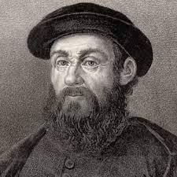
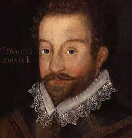
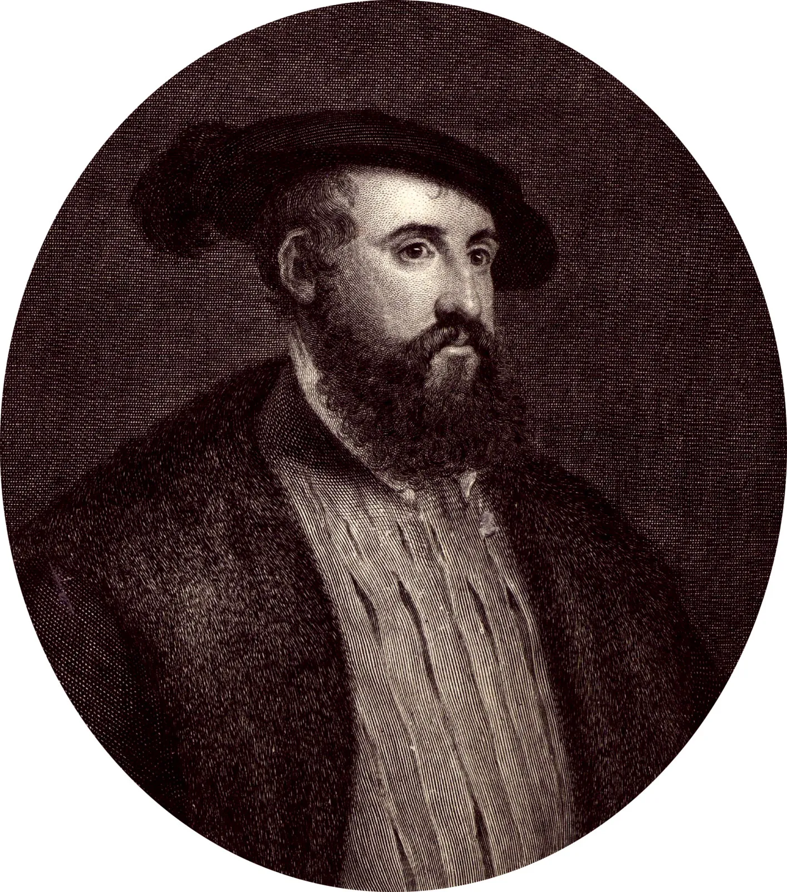

FACT FILES
Ferdinand Magellan

- Occupation: Explorer
- Born: 1480 in Portugal
- Died: April 27, 1521 in Cebu, Philippines
- Best known for: Circumnavigation of the globe
Sir Francis Drake

- Occupation: Explorer, privateer
- Born: 1540 in Tavistock, England
- Died: January 27, 1596 in Portobelo, Panama
- Best known for: Circumnavigation of the world
Hernando Cortes

- Occupation: Conquistador,Explorer
- Born: 1485 in Medellin, Castile, Spain
- Died: December 2, 1547 in Castilleja de la Cuesta,Spain
- Best known for: Conquering the Aztec Empire